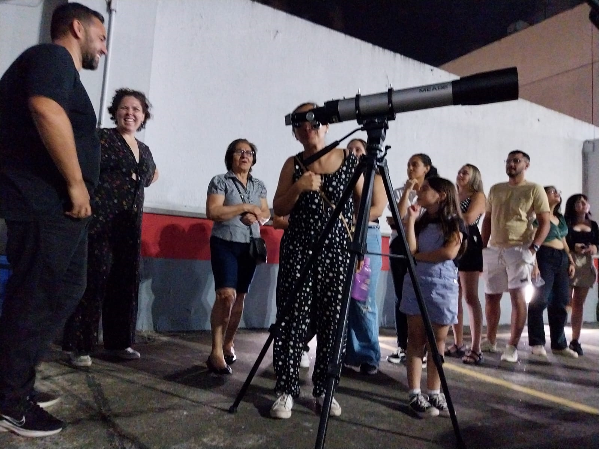

"Dia da Astronomia nas Escolas"
"UM PLANETÁRIO EM DIADEMA" VENHA ASSISTIR A UMA SESSÃO GRATUITAMENTE NO SHOPPING PRAÇA DA MOÇA!
Observe o céu e viva uma experiência gratificante!

Apoio:

Clube de Astronomia Artemis/Escola PEI Antonieta Borges Alves
R. Araguaia, 365 - Conceição, Diadema - SP, 09990-290 - (11) 4056-6382
As estrelas do ABCD vão brilhar mais forte!
Participem do Mês da Astronomia (Agosto) - União Astronômica Internacional.
"Dia da Astronomia nas Escolas", criada em 2019 por Paulo Bretones e apresentada à União Astronômica Internacional para ser inserida nas atividades globais de divulgação da Astronomia. Com o seu falecimento em agosto de 2023, sua ideia é transformada numa justa lembrança e reconhecimento, estimulando anualmente atividades ligadas à Astronomia nas escolas durante o mês de agosto.
Faça a sua inscrição para o mês da astronomia e venha aprender e se divertir com conosco!
Dias 17 e 18 de Agosto.
O que teremos nesses dias?
Palestras sobre temas astronômicos;
Telescópios para observação astronômica;
*Objetos principais a serem observados nesses dias: Lua e Saturno;
Sessões do Planetário Móvel;
Material explicativo.
Todas as escolas podem participar. Inscreva a sua escola e venha aprender conosco!
Faça sua inscrição
pelo QR code:

OBJETIVOS:
Fomentar o interesse dos jovens pela Astronomia e pela Astronáutica e ciências afins, promover a difusão dos conhecimentos básicos de uma forma lúdica e cooperativa, mobilizando num mutirão nacional, além dos próprios alunos, seus professores, coordenadores pedagógicos, diretores, pais e escolas, planetários, observatórios municipais e particulares, espaços, centros e museus de ciência, associações e clubes de Astronomia, astrônomos profissionais e amadores, e instituições voltadas às atividades aeroespaciais.
O ensino de astronomia praticado em sala de aula nas disciplinas de geografia, ciências e física, atualmente fica muito na parte teórica, isso desestimula os alunos a descobrir e desbravar novas possibilidades práticas de vivenciar um assunto tão instigador. Hoje, é necessário rever o ensino das Ciências e torná-la mais próxima da realidade dos estudantes, ensinando “mais do que conceitos pontuais”, oportunizando os estudantes “a pensar criticamente o mundo e a construir uma visão de mundo”. Para isso, espera-se que os alunos tenham participação ativa nas atividades, debatendo temas atuais que forem de interesse individual e coletivo, buscando explicações e estabelecendo relações entre o tema estudado e seu cotidiano, contribuindo para o alcance de sua autonomia e permitindo à professor acompanhar as aprendizagens dos estudantes.
Como coordenador do Planetário de São Bernardo Campo, pude perceber o quão importante é o conhecimento científico transmitido de forma didática a uma criança, porém, nem todas tem acesso a este tipo de tecnologia. Assim tomamos a iniciativa de colocar este projeto em prática, sabemos que o cidadão não pode viver esperando pelo poder público para que sua cidade tenha melhorias significativas na área educacional e desenvolvimento científico, entendemos que estas responsabilidades também podem partir dos cidadãos, empresários e instituições educacionais colaborando com seus conhecimentos, espaços ou custeando equipamentos fundamentais para o bom desenvolvimento do projeto junto às escolas do município.
A Astronomia, supostamente, possuiria a característica de despertar vários tipos de sentimentos, junto a diferentes grupos sociais, tais como curiosidade, interesse, fascinação, encantamento, e esta característica poderiam ser aproveitados no processo de ensino e aprendizagem de temas e conteúdos ligados a ela.
Sua Relevância sócio-histórico-cultural teria uma significativa relevância pois, ao longo da história humana, o seu desenvolvimento teria proporcionado diversas contribuições para a evolução de civilizações, tais como possibilidade de registro e organização do tempo, aprimoramento nas técnicas de plantio e caça, orientação necessária para grandes locomoções, dentre outras.
O estudo e a aprendizado de conhecimentos da Astronomia poderia promover ampliação de visão de mundo, questionamentos e reflexões, o que também poderia acarretar numa maior conscientização a respeito de temas como cidadania, preservação ambiental e sustentabilidade.
Ela tem a característica de facilmente se relacionar com outras áreas do conhecimento humano, o que constituiria um grande potencial educativo. As disciplinas de Física e Matemática têm se tornando críticas devido à dificuldade da maioria dos alunos na área de exatas, nesta eletiva ira abordar de forma dinâmica e interdisciplinar, em que o professor irá mostrar várias aplicações da Matemática e da Física na Astronomia
JUSTIFICATIVA: A eletiva se refere a uma proposta de ensino desenvolvida para o Ensino fundamental, que trata conceitos de Geografia e Ciências a partir do tema Astronomia. O planejamento das atividades de ensino visa propor uma reflexão sobre a Astronomia e, sua importância no ensino de geografia, Física, Matemática e História e na contextualização do tema a partir das vivências e dos interesses dos estudantes. O grande benefício trazido pela Eletiva para a escola é a aprendizagem, pois procurarmos sanar a defasagem no ensino de orientação geografia, cálculo e ciências. A ideia e unir essas três disciplinas e fazer o aluno assimilar os conceitos aprendidos em sala de aula de maneira mais lúdica dando sentido pratico a esses cálculos e mostrando como funcionam algumas profissões e assim contribuindo para o Projeto de vida. É preciso que o aluno use seu conhecimento, aplique-o e crie relações sobre o que estudou, além de desenvolver habilidades de trabalho em grupo e a Ideia de descobrir como funcionam os fenômenos astrofísicos ao seu redor e a influência dos astros na vida terrestre.
OBJETIVO: O objetivo é apresentar de maneira qualitativa os quadros da astronomia moderna, enfatizando os conceitos lógicos que levaram a sociedade evoluir e saber mais sobre o Universo em que vivemos..
Inscrição:
As escola/alunos interessados podem se inscrever durante todo o mês de Julho e Agosto, por meio do “ABA ARTEMIS”.
O evento contara com um Planetário Móvel para melhor aproveitamento das aulas de reconhecimento do céu e orientação geográfica, Telescópio, auxílio de professores e colaboração de alunos que já foram medalhistas na OBA. Não fique fora dessa!
Basta entrar em contato conosco ou preencher o cadastro online para se inscrever.
Novidades deste ano incluem a utilização de um planetário móvel, Telescópio e o apoio de professores e alunos que já participaram da OBA, além do apoio da UNIFESP Campus Diadema, Secretaria Municipal de Educação de Diadema e do Shopping Praça da Moça.
No Shopping Praça da Moça, realizaremos observações astronômicas em seu terraço, proporcionando a oportunidade de descobrir os encantos do universo por meio de telescópios disponíveis aos alunos e interessados. Na praça da moça teremos lançamento de foguetes a água.
Principais atrações da noite:
Data 17/09/2024



Saiba mais sobre nosso projeto nas escolas e como você pode fazer parte:
www.astronomianaescola.elementfx.com
Prof. Milton Pereira
Clube de Astronomia Artemis/Escola PEI Antonieta Borges Alves.
Apoio: